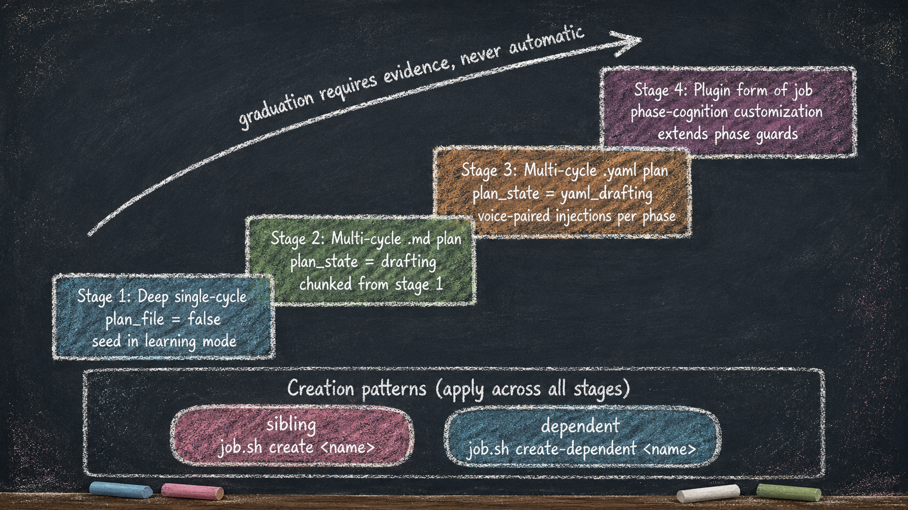

The Stages of Job Maturation
Essay 8.2 — From Apprentice to Architect, Part 2 of 9.
Essay 8.1 framed the three growth axes: jobs mature upward, controls migrate inward, the operator shifts from supervising to composing. This essay opens the first axis — the job-maturation arc. Every job your seed agent does passes through several maturation stages; the current prototype names four. Most jobs never reach the fourth. Some never leave the first. The progression is not automatic — each stage requires a specific kind of evidence before the seed promotes a job into the next shape. ⓘ
A consulting practice’s seed runs client-intake jobs that look nothing like a research lab’s experiment-protocol jobs. Both pass through this maturation arc with the same gates; the substance the operator and seed accumulate at each stage is different. The arc is universal; the artifacts each stage produces are not.
Stage 1 — Deep Single-Cycle OPEVC
This is where every new job begins. The user gives the seed a prompt; the seed treats the prompt as a single OPEVC cycle. The seed is in learning mode: it asks questions, takes its time, builds experiential data from the conversation. Backward edges and loops happen inside the cycle — not across cycles — because the cycle is the entire job’s runway. ⓘ
The seed agent does not rush through this stage. Its goal is to understand what the user wants the completed work to look like, what files are involved, what edits feel right, what failure modes the user wants to avoid. The seed asks clarifying questions through structured prefixed asks; it captures every Q+A into the focused job’s user_interactions array; over many turns, the array becomes the agent’s cumulative mega-prompt — the whole history of intent the seed re-reads as its instruction set. ⓘ
Take a blog-writing job as a concrete example. Cycle 1 starts when the user prompts "let’s write a new blog post." OBSERVE asks about the topic, the audience, the existing voice constants, the file inventory the post will produce (.md + .html + transcript + audio + images + ref tags). PLAN sketches an outline; the user redirects; the outline is rewritten. EXECUTE drafts paragraphs; backward edges fire when the user pushes back on a section. VERIFY runs the user’s own approval cycle — which sections feel right, which need rework.
CONDENSE then closes the cycle by absorbing what it produced: the four footer-marker sections (OBSERVE, PLAN, EXECUTE, VERIFY footers from Essay 5.7) plus the cycle’s inline markers (pending-job, voice-update, agent-update, knowledge — the inter-phase protocol from Essay 7.2 and surrounding essays). The absorbed content lands in the knowledge layer alongside the operator’s preferences, the files that mattered, and the discipline that emerged. ⓘ
Different users have different jobs. A chemist running a technoeconomic-analysis job at this stage will follow a very different conversation than the website manager at this stage running a blog-writing job. The seed adapts to each user’s specific work because the early-stage OPEVC cycle is collaborative — the user shapes the work while the seed records the shaping. The result is that the operator’s own seed becomes one that knows how this operator wants this kind of job done.
The cycle ends with a deep CONDENSE. The seed absorbs the cycle’s interaction history, the file artifacts produced, the user’s preferences, the patterns that worked, into the knowledge directory and into the relevant plugin’s evolution.md files. The next job of the same shape will start from a much richer base. The limit here is friction, not enforcement: a seed can technically advance phases without learning anything, but the deflation gates and the historian’s drift counter make doing so visibly costly. ⓘ
Stage 2 — Multi-Cycle With a Markdown Plan
After one or several stage-1 runs of the same kind of job, the seed has accumulated enough experiential data to write the plan in advance. The job graduates from a single deep cycle into a multi-cycle job with a persistent .md plan document.
The graduation is concrete: in PLAN of cycle 1, the seed calls plan.sh set-plan-file plan_<slug>.md instead of leaving the field false. From that moment, the plan document lives at .claude/knowledge/plans/, EXECUTE authors the initial draft in cycle 1 (or updates an existing one on re-activation), and VERIFY refines it across every subsequent cycle. The plan file is the job’s long-horizon memory: it persists across runs, and each re-activation reads the refined plan and gets smarter. The name is set once — set-plan-file refuses a second call once the field is set — and there is no separate approval state and no sealing step. The plan file simply persists and accumulates experience. ⓘ
Most of what was backward edges inside the stage-1 cycle becomes cycle transitions in stage 2. Where the user previously pushed back mid-cycle and the seed iterated within OPEVC, now the seed completes a clean cycle, presents results in VERIFY, and the user approves or sends back. CONDENSE absorbs between cycles, the next cycle’s OBSERVE recalls the prior cycle’s lessons, and the work compounds. The deflation gate at cycle close is the same for every job — eighty percent of the footer words must be absorbed before the cycle can advance, whether the job runs once or across many cycles — because the cross-cycle handoff lives in the plan file, not in the footers. ⓘ
A stage-2 blog-writing job is one where the writing arc is well-understood. The plan document, authored in cycle 1, declares how many cycles the job runs and what each one advances (cycle 1 outline; cycle 2 first draft; cycle 3 ref tags; cycle 4 transcript + audio; cycle 5 cross-blog consistency). The job completes when it reaches its declared last cycle: that final cycle’s VERIFY makes [JOB-COMPLETE] eligible through the cycle-count formula, and that cycle’s CONDENSE asks it. There is no separate approval step — completion is the cycle-count formula, asked once at the end. ⓘ
Stage 3 — Multi-Cycle With a YAML Plan
Stage 3 is what a Stage-2 job becomes once its plan has stopped changing and the operator wants it to carry richer, structured, per-phase context. The completion semantics are identical to Stage 2 — same cycle-count formula, same [JOB-COMPLETE] gate, same persistent plan file that accumulates across runs. The single difference is the plan file’s format: a .yaml document instead of a .md one. It is not a state-flip on the Stage-2 job, and it is not a dependent of it — a Stage-3 job is its own repeatable job whose cycle-1 PLAN names a .yaml plan file, typically authored once the matching .md pattern has been run enough times to be worth hardening into parseable structure. ⓘ
Concretely: a Stage-3 job’s cycle-1 PLAN calls set-plan-file plan_<slug>.yaml; cycle-1 EXECUTE creates the .yaml, whose cycles: list declares the per-cycle entries; cycle-1 VERIFY refines until it is good. From cycle 2 onward the job does its real operational work, and the orchestrator reads the .yaml at every phase entry to inject job-specific context into the agent’s voice stream. The plan file persists and the job is reactivatable, exactly like a Stage-2 .md job — only the format, and the per-phase injection it unlocks, set it apart. ⓘ
The .yaml is not a translation of the .md — it is an injection target. The orchestrator reads the .yaml at every phase entry of the Stage-3 job (and any future re-activation of it) and augments the agent’s voices with job-specific context.
Today the prototype’s .yaml plan carries any keyed value per phase: the keys ARE voice ids directly, and the orchestrator augments each value’s matching rendered voice when the phase opens. The yaml field name doesn’t transform — it pairs by literal id match.
Adding a new injection target requires only adding the matching voice id to the relevant plugin’s voice.xml (or reusing an existing id) and writing the yaml entry. The voice-helper iterates the cached field map, finds matching ids, and augments each value into the rendered text in one of three modes — bare-string yaml entries append (the back-compat default); structured entries of the form {mode: replace, text: "..."} replace the rendered voice text entirely; {mode: prepend, text: "..."} entries stamp the yaml content above the standard guidance. Variable substitution flows from the underlying voice’s args into the yaml text unchanged, so {{job_id}} and the rest substitute symmetrically across both surfaces. Plugin voices stay completely naive about yaml; no code changes per new field. ⓘ
The yaml key IS the voice id directly — no transform, no naming convention — which makes the callable voice catalog the contract surface for stage-3 customization. A yaml plan can only target voices that some hook or script actually fires; defining a voice without a callsite produces an orphan that never injects into context, and an invisible trap for yaml authors who target it and watch nothing happen. A catalog tool builds the contract surface by scanning every plugin’s voice.xml for definitions and every non-test source file for quoted references; the yaml loader rejects keys outside the callable set at validate-yaml-format time with did you mean suggestions drawn from the closest matches. This catches the most common yaml authoring error — typing a voice id that no longer exists or never did — before the cycle runs. ⓘ
Stage-3 YAML jobs also skip the manual forecast ceremony each phase normally requires of the agent. When a job’s plan_file ends in .yaml, every phase’s init stamps the new entry’s multiplier with 3 (the RAPID end of the scale) instead of the 0 sentinel that would otherwise leave tools locked until the agent calls set-multiplier with a manual forecast. The yaml plan IS the forecast — the agent shouldn’t be asked to re-forecast at every phase entry. The PRE-SET sentinel voice that normally nags the agent to set a multiplier naturally goes silent for these jobs because it only fires when the multiplier is 0. ⓘ
What this means in practice: a stage-3 blog-writing job’s .yaml carries not just the per-phase objective but also per-phase reading lists (which knowledge files OBSERVE should pull first), per-phase tools-focus hints (which subagents PLAN should dispatch most), per-phase exit signals (what VERIFY should specifically check). Every field pairs with a voice id from phase_observe/hooks/voice.xml or the equivalent. The seed agent doing the job receives the job-specific context as part of its normal phase entry — same delivery mechanism as the universal voices, just more of them, all framed for this job’s specific shape.
Stage 3 completes the same way Stage 2 does — through the cycle-count formula, not a separate approval step. The .yaml injects from the first cycle it exists, and it keeps injecting on every reactivation. What earns a job the extra structure is not a new gate but the leverage of that injection: the same job, run again, arrives at each phase already briefed on what this specific work needs. ⓘ
Stage 4 — Plugin Form of a Job
The final stage is aspirational — named in the architecture, not yet built in the prototype. It is the shape reserved for jobs whose phase cognition needs customization beyond what context injection can deliver. ⓘ
Some jobs require specific tools allowed only during certain phases. Some require the OBSERVE phase to read a specific set of sources before any tool fires. Some require the EXECUTE phase to enforce a specific pattern on writes. Voice injection cannot deliver this; the discipline has to be structural. The job graduates into a plugin.
A plugin form of a job extends each phase’s guard with job-specific rules. The plugin lives at .claude/plugins/<job_name>/ like any other plugin — with the minimal skeleton stamped first, then whichever hooks, scripts, tests, voices, agents, and knowledge files the job-type actually earns. Its hooks attach to the standard OPEVC events with logic that recognizes when the focused job matches this plugin’s job-type and applies extra constraints. Outside that job-type, the plugin’s hooks are pass-through. ⓘ
This stage is the bridge between the seed agent’s plugin kit (Essay 7.1) and the operator’s own work. New plugins do not have to come from upstream; they can be born from your own jobs reaching maturity. The operator’s seed, by month three or six, may carry plugins that exist nowhere else — plugins shaped by exactly the kind of work this operator does, encoded into the seed’s substrate. The limit here is the same as everywhere in the kit: enforcement runs only where the plugin’s own hooks fire; a hook absent or mis-registered enforces nothing.
How Jobs Spawn Alongside Each Other — Standalone and Dependent
Across the maturation arc, jobs do not run in isolation. The job system also tracks relationships between jobs through creation patterns; the current prototype exposes two — standalone and dependent — and the same lifecycle could add more. ⓘ
A standalone job is one the focused job spawns to do parallel work that does not block. job.sh create <name> while a parent is focused creates a pending job with no link to the parent — an empty depends_on array. The standalone job waits its turn in the queue. Standalone creation is how the focused cycle says: I noticed something else worth doing, but it does not belong inside this cycle. ⓘ
A dependent job is a standalone job with a depends_on link to the parent. job.sh create-dependent <name> writes the new job’s id into the focused job’s depends_on array, and the focused job’s job-complete approval will be refused until every entry in depends_on reaches completed. Dependent jobs let the operator declare ordering: this fix must finish before this feature can ship. The completion gate enforces the relationship structurally — the agent and the user can both want to approve the parent, but the gate refuses until the dependencies clear. ⓘ
These patterns work across every step of the maturation arc. A stage-1 deep job can spawn standalone jobs. A stage-3 yaml job can spawn dependents. The discipline is consistent: jobs are created during CONDENSE (when the cycle’s wider context surfaces follow-up work), not in IDLE or mid-execute. ⓘ

The maturation arc climbs on the upward axis, creation patterns sideways — and every gate between them is evidence-based, not automatic. The next essay opens a snapshot of the prototype’s brain after three months of accumulation, so the outcome of these stages is visible in concrete numbers.
Essay 8.2 — From Apprentice to Architect, Part 2 of 9.
Previous: Essay 8.1 — Apprentice to Architect Foundation — the three growth axes and the series roadmap. Next: Essay 8.3 — What Lives in the Brain After Three Months — the prototype as ground-truth inventory.
Comments